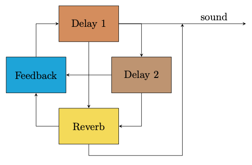

Interacting with Feedback
Guitar/Amplifier feedback
This example uses higher gain distortion and reverb to create something a little closer to electric guitar feedback. The reverb is in the feedback loop, and so adds an extra layer of complexity.
Using the reverbjs.org reverb.
You might find that certain tones really start to stick and can be quite hard to dislodge. This is an excellent example of hysteresis, and the whole 2D space sometimes only seems to make minor modifications to the tone. You should still be able to find a way to change to a different note however. Try rapid movements, or leaving it in one place to allow something else to develop, or combinations of these things.
Diagram
